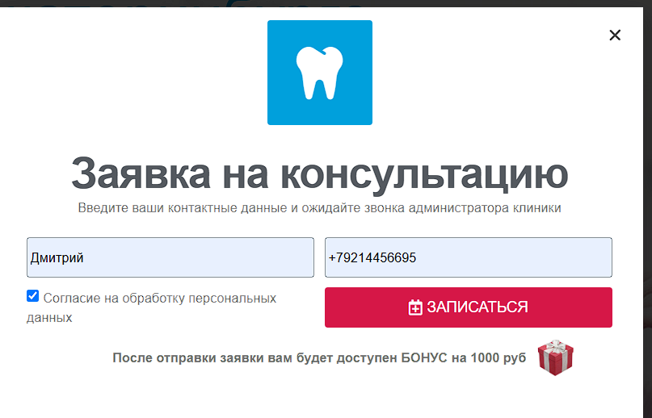
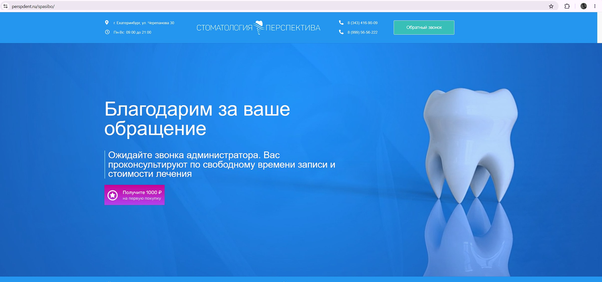
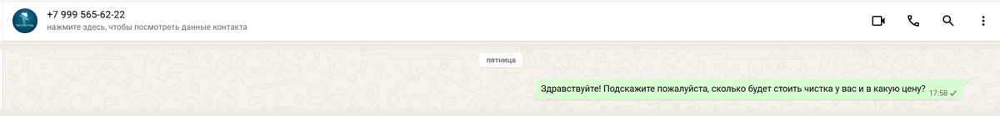

ул. Черепанова, 30 · Екатеринбург · рейтинг 4,8 · 178 оценок · 114 отзывов
Клиника растёт. За 2026 год — 22 новых отзыва против 13 за весь 2025-й. По телефону отвечают быстро и по делу.
Но заявка, оставленная на Вашем же сайте в пятницу вечером, за четверо суток не получила обратного звонка. Хотя сайт обещает этот звонок трижды — на трёх экранах подряд.
Мы позвонили на +7 (343) 416-90-09 и задали простой вопрос: что входит в профессиональную гигиену. Трубку взяли быстро, состав процедуры рассказали без запинки, вопрос в тупик не поставил.
Это не везде так. В одной из клиник района на тот же вопрос администратор растерялась и внятного ответа не дала.
Проверено 4 сентября 2026
22 отзыва за неполный 2026 год против 13 за весь 2025-й. Среди клиник района, которые мы смотрели, такой рост — редкость: у большинства поток ровный, у некоторых падает в разы.
Свежайший отзыв: 21 августа 2026
Весь разбор ниже — о том, что происходит с обращением до того, как оно доходит до человека.
Клиника заявляет режим Пн–Вс, 09:00–21:00 и «консультация без выходных». Всё описанное ниже происходило в Ваши рабочие часы.
Это не наша трактовка, а Ваш собственный текст. Вот что человек читает, пока оставляет заявку.
Экран первый. Зелёная кнопка «Обратный звонок» в шапке сайта, на каждой странице.
Экран второй. Форма, которая по этой кнопке открывается:
«Введите ваши контактные данные и ожидайте звонка администратора клиники»perspdent.ru, форма «Заявка на консультацию»

Экран третий. Страница, на которую пациент попадает сразу после отправки:
«Благодарим за ваше обращение. Ожидайте звонка администратора. Вас проконсультируют по свободному времени записи и стоимости лечения»perspdent.ru/spasibo/

Заявка отправлена в 18:03 в пятницу. Звонка не было ни в пятницу, ни в выходные, ни в понедельник, ни во вторник.
С самими обещаниями всё в порядке — так и надо. Проблема в том, что каждое из них поднимает ожидание: человек прочитал «ожидайте звонка» три раза и сел ждать. Чем выше ожидание, тем сильнее ощущение, что его проигнорировали, — и тем охотнее он идёт к соседям.
Проверено 4 и 8 сентября 2026
WhatsApp указан и в карточке Яндекс.Карт, и на сайте — это единственный мессенджер, который Вы предлагаете пациенту. Сообщение, отправленное в 17:58 в пятницу, ответа не получило.

Проверено 8 сентября 2026
В карточке Яндекс.Карт у Вас указаны WhatsApp и Viber. Но Viber в России фактически перестал существовать: с конца 2024 года он не открывается, а компания закрыла московский офис и свернула работу в стране. Кнопка в карточке есть, за ней ничего нет.
Значит, написать Вам пациент может ровно одним способом — в WhatsApp. Ни Telegram, ни ВКонтакте, ни Max в карточке нет, хотя именно они у большинства уже стоят на телефоне. У соседей есть: у Стоматологии Захаровой, Доктора А и Дента ОС — по четыре канала на каждого.
Здесь теряется не ответ на обращение, а само обращение: человек не пишет в мессенджер, которого у него нет, и не переключается ради этого на другой. Он открывает соседнюю карточку.
Проверено 8 сентября 2026
Поток отзывов у Вас растёт, и это самый ценный актив в карточке. Но за весь 2026 год ответ клиники стоит под одним отзывом из двадцати двух. Каждый ответ читают следующие несколько десятков человек, которые выбирают между Вами и соседями — и видят, что клиника в диалог не вступает.
Проверено 1 сентября 2026 · рейтинг 4,8 при 178 оценках
Под блоком с тремя ценами на имплантацию стоит подпись «Акция действует до конца лета». Сегодня 8 сентября. Пациент, который придёт с этой ценой, поставит администратора в неудобное положение — а пациент, который заметит просроченную акцию сам, сделает вывод обо всём остальном на сайте.
Также внизу сайта указан 2021 год — отметку с тех пор не меняли.
Проверено 8 сентября 2026
Вам повезло с расположением: в радиусе километра всего четыре стоматологии, тогда как в центре района их бывает десять на пятьсот метров. Но вот как выглядит выбор пациента между Вами и ними.
| Клиника | Расстояние | Рейтинг | Отзывов | Каналы для сообщения |
|---|---|---|---|---|
| Перспектива | — | 4,8 | 114 | только WhatsApp |
| Стоматология Захаровой | 221 м | 5,0 | 204 | WhatsApp, Telegram, ВК, ОК |
| Доктор А | 714 м | 5,0 | 118 | WhatsApp, Telegram, ВК, ОК |
| Дента ОС | 844 м | 5,0 | 394 | WhatsApp, Telegram, ВК, Max |
| Гарант | 940 м | 5,0 | 332 | только ВКонтакте |
Каналов у Вас меньше. В карточке два, но Viber в России больше не работает — значит рабочий один. У трёх соседей из четырёх их по четыре.
Пациент пишет туда, где у него уже открыт мессенджер. Если Вашего в этом списке нет, обращение не появится вовсе — Вы даже не узнаете, что оно было.
С отзывами то же самое. У Захаровой без ответа два из последних двенадцати, у Гаранта — ни одного. У Вас — двадцать один из двадцати двух.
И все четверо держат рейтинг 5,0 против Вашего 4,8.
Точное число потерянных обращений не знает никто: они не попадают в отчёты, потому что не дошли даже до записи. Но порядок можно прикинуть — подставьте свои цифры.
Самое дорогое здесь — не разовый чек, а постоянный пациент, которого Вы можете потерять.
Формула открыта: обращения × доля пишущих × 0,3 × средний чек. Коэффициент 0,3 — доля тех, кто дошёл бы до лечения; треть взята намеренно заниженной. И это только первый визит: пациент, который оставил заявку и не дождался звонка, не вернётся ни на профгигиену через полгода, ни за коронкой через два года.
Первое — самое вероятное объяснение и самое дешёвое в проверке.
Всё это можно сделать своими силами — понадобится вечер и человек, готовый разбираться с админкой сайта и настройками карточки.
Если разбираться не хочется — это могу сделать я. Найти, куда уходят заявки, подключить недостающие каналы, привести карточку в порядок. Отдельный разговор — сделать так, чтобы заявка и сообщение получали ответ в течение минуты, круглосуточно и в выходные, и чтобы ни одно обращение не могло потеряться молча. Напишите, обсудим, что из этого Вам нужно.